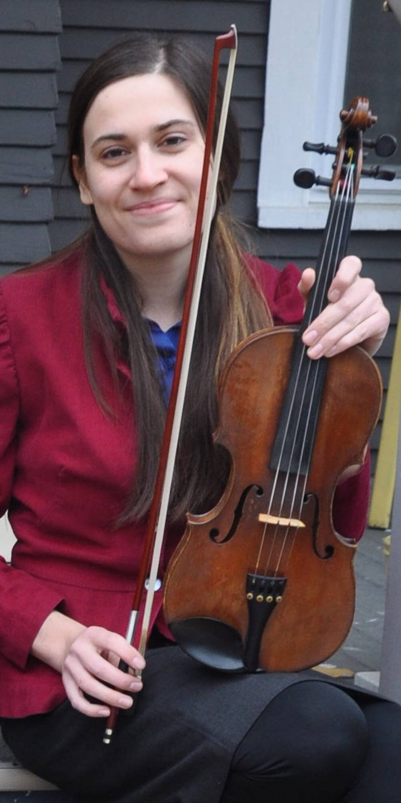

What I am learning now
Mobile Development
Introduction to Computer Science (Summer 2017)
Java Programming 1 (Fall 2017)
iOS Programming (Spring 2018)
Web Fundamentals/HTML: from Saint Paul College (current)
More Swift
Check out SwiftMN’s meetups
Fun Tetris App
Made this app with the help of Bloc.io’s Swiftris tutorial
More Java
Been using Udacity to teach myself more Java and Android programming
Talkative Chef (Hack the Gap winner 2017)
Worked with an incredible group of women to create a voice-controlled Recipe
guide that would walk you through different recipes.
You can see the code
Music
Dòrain
My band Dòrain, is a traditional Scottish & Irish folk band based in Minneapolis
We released our first CD in January 2017. Check it out on bandcamp for purchase: Over The Main